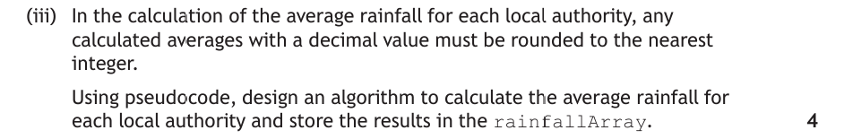

Design at Advanced Higher
Design turns the requirements specification into something a programmer can actually build. Almost everything you need you already have:
- Structure diagrams — from National 5 and Higher: the main steps of a program drawn as boxes, broken down into smaller boxes;
- Pseudocode — the same design written as numbered steps in plain, structured English;
- Data flow — from Higher: naming the variables and structures that pass into and out of each module;
- User-interface design — from Higher: a wireframe showing what the user sees and does.
None of these notations change at Advanced Higher. What changes is what you are designing with them. A Higher structure diagram might read data from a file into a 1-D array and search it. At Advanced Higher the same boxes will hold an array of records read from a database, an insertion sort, a binary search, or a 2-D array — so every example on this page is built from Advanced Higher concepts rather than Higher ones.
One notation is new, and it exists because Advanced Higher introduces object-oriented programming: the UML class diagram, which models the classes in a program rather than its steps.
Design is the second-biggest skill in the course assessment: 20 marks of the project and a substantial share of the question paper.
Key Terms
results: Array of Result[ ].The Problem We Are Designing
Every design notation on this page describes the same problem, so you can see one solution expressed four different ways. It is the PB Tracker analysed in full on the Analysis page:
A coach types in an athlete's name and a distance. The program reads every result that athlete has recorded at that distance from the club database, then displays the athlete's personal best for the distance together with their three most recent results, each showing the date and the event.
Look at what that one paragraph contains — it is a deliberately Advanced Higher shape of problem:
- Data entered by the user — the athlete's name and the distance, from the keyboard;
- Data read from a database — every matching result, loaded into a data structure;
- A complex process — the results must be put in date order before the three most recent can be picked out, and the fastest of them found;
- A structured output — not a single value, but a personal best and a formatted list of three results.
Identifying the data types and structures
Before drawing anything, work out what the data looks like. Each result has three pieces of information of different types, which rules out a simple array — you need a record, and then an array of records to hold many of them:
RECORD result IS { STRING date, STRING event, REAL time }
resultsArray an array of result records — up to 100 for one athlete
numResults how many results were actually loaded
athleteName the name entered by the coach
distance the distance entered by the coach, 100 to 10000
bestIndex the position of the fastest result in resultsArrayThe record structure is written in the form exam papers use when they hand you one — 2023 Question 5 gives its record exactly like this — so it is worth being able to read at a glance.
| Data | Type or structure | Why |
|---|---|---|
date, event | String | Text that is displayed but never calculated with. |
time | Real | Race times need decimal places (4:21.6), so an integer would lose precision. |
result | Record | Three different types describing one thing — exactly what a record is for. Parallel arrays would work but are far harder to sort. |
resultsArray | Array of records | Many results, all the same shape, that must be sorted and searched as a unit. |
numResults, distance, bestIndex | Integer | Whole-number counts, positions and metres. |
Choosing the structure first is what makes the rest of the design possible — the moment you commit to an array of records, sorting becomes "move whole records", and every later step can refer to resultsArray[index].time. Records and arrays of records are covered in depth on the Data Structures page.
Structure Diagrams
A structure diagram shows a program as boxes. The program name goes in a box at the top, the main steps sit in a row beneath it, and anything below a box happens inside that box. Boxes at the same level run left to right.
Top-level design with data flow
The top-level design is just the main steps, in order, with no detail — and the fastest way to get it is to take the functional requirements and turn each one into a box. Data flow is then added to every box: which variables go in, and which come back out.
![Top-level structure diagram for the PB Tracker. A box labelled Look Up Personal Best sits at the top, with five boxes beneath it connected by a horizontal line: 1 Get athlete name and distance, 2 Load results from database into resultsArray, 3 Sort results by date most recent first, 4 Find the personal best, and 5 Display PB and the three recent results. Green downward arrows on each connector show data flowing in and gold upward arrows show data flowing out. Beneath each box a band lists the variables: step 1 takes nothing in and returns athleteName and distance; step 2 takes athleteName and distance and returns resultsArray and numResults; step 3 takes resultsArray and numResults and returns the sorted resultsArray; step 4 takes resultsArray and numResults and returns bestIndex; step 5 takes resultsArray, numResults and bestIndex and returns nothing.](../resources/sdd/pb-structure-top.svg)
Read the data flow across the diagram and you can see the whole program working: athleteName and distance are produced by step 1 and consumed by step 2; resultsArray is produced by step 2, modified by step 3, and then read by steps 4 and 5. A variable that goes into a module and comes back changed — like resultsArray in step 3 — is flowing in and out, and that is worth showing explicitly.
How to refine a step
A top-level step like "sort the results" is a whole algorithm hiding inside one box. Refinement is breaking it open. Complex problems put people off because they try to refine everything at once — so use the same method every time:
- Ask whether the step needs refining at all. If you could sit down and code the box in one or two lines, leave it alone. "Get athlete name and distance" needs no refinement; "sort the results" clearly does.
- Say what the step does in one sentence, out loud. "It puts the records in order with the most recent date first." That sentence names the algorithm you need.
- Decide what has to repeat. Nearly every Advanced Higher refinement contains a loop. Ask: fixed loop (you know how many times — "for each of the 32 authorities") or conditional loop (you don't — "until the right position is found")?
- Write the steps for one pass of that loop. Just one. What happens to a single record, a single reading, a single authority?
- Add what must happen before and after the loop. This is where marks are won and lost: initialising counters and totals before, and storing or displaying the result after.
- Number the sub-steps under the parent. Step 3 becomes 3.1, 3.2, 3.3… If any sub-step is still too big, refine it the same way (3.4 → 3.4.1, 3.4.2).
The most complex refinement — step 3
Applying that method to step 3: it needs a fixed loop through every record (we know how many there are), and inside it a conditional loop that shifts records along until the right gap appears. That is an insertion sort, and because it contains a loop inside a loop it is the most complex box in this design — so it is the one worth drawing in full.
![Refinement structure diagram for step 3, the insertion sort. Step 3, sort results by date most recent first, sits at the top. Below it is a gold box marked with a loop symbol: 3.1 for each record from the second to the last, a fixed loop. Beneath 3.1 are four boxes: 3.2 copy the current record into temp; 3.3 set pointer to the position before it; 3.4 a second gold loop box, while pointer is at least zero and temp is more recent than resultsArray at pointer; and 3.7 place temp at position pointer plus one. Beneath 3.4 are two further boxes: 3.5 move that record up one position, and 3.6 subtract one from pointer. A note explains that gold boxes with loop symbols are iteration, that 3.1 is a fixed loop and 3.4 a conditional loop nested inside it, and that everything below a box happens inside it while boxes at the same level run left to right.](../resources/sdd/pb-structure-refine.svg)
Steps 1, 2, 4 and 5 would each get their own refinement diagram in a full design — step 2 opening the database connection and running a query, step 4 refining into a find-minimum, step 5 into a formatted display loop. In an exam you are normally asked for one refinement, and it will be the one with the algorithm in it.
Pseudocode
Pseudocode carries exactly the same information as a structure diagram — the same steps, the same numbering, the same refinements — but written as lines rather than boxes. It is the notation the exam asks you to produce, because it scales: a design three levels deep is painful to draw and easy to write.
Here is the same design you have just seen, in pseudocode. Compare it box for box with the diagrams above.
1. ask the coach for an athlete name and a distance
out: athleteName, distance
2. load all matching results from the database into resultsArray
in: athleteName, distance out: resultsArray, numResults
3. sort resultsArray by date, most recent first
in: numResults in/out: resultsArray
4. find the athlete's personal best
in: resultsArray, numResults out: bestIndex
5. display the personal best and the three most recent results
in: resultsArray, numResults, bestIndex, athleteName, distance3.1 for position = 1 to numResults - 1
3.2 store resultsArray[position] in temp
3.3 set pointer = position - 1
3.4 while pointer >= 0 and temp.date is more recent than resultsArray[pointer].date
3.5 copy resultsArray[pointer] into resultsArray[pointer + 1]
3.6 subtract 1 from pointer
end while
3.7 store temp in resultsArray[pointer + 1]
end forThe numbering matches the refinement diagram exactly, box for box — 3.1 is the outer loop, 3.5 and 3.6 sit inside 3.4, and 3.7 runs once per record after the inner loop has finished. The end while and end for lines are unnumbered here because they close a step rather than being one; numbering them too, as published marking instructions often do, is equally acceptable.
store temp in resultsArray[pointer + 1], not SET resultsArray[pointer + 1] TO temp. Use exact array positions where the algorithm depends on them, and plain description everywhere else.Two details in that refinement are worth copying into your own designs. The whole record is copied into temp and moved as a unit — not just the date — so the event and time travel with it. And the loop at 3.4 stops on two conditions: the pointer running off the front of the array, and the correct position being found. Forgetting the first is the classic way to write a sort that crashes.
Worked Example
This is 2023 Question 5 — a full design question worth 13 marks across its parts. Read the scenario, attempt each part yourself, then open the marking instructions. The commentary shows the six-step refining method being applied to an unfamiliar problem.
The scenario and the given structure diagram:
![2023 Question 5. EnviroScot has set up 500 weather stations across Scotland to track the effect of climate change. Several weather stations have been placed in each of the 32 local authorities. The rainfall in centimetres for 28 February 2023 from all 500 weather stations has been stored in a CSV file. A structure diagram shows the Climate Tracker program with five modules: read weather data from file, extract unique local authority names, insertion sort local authority names, calculate average rainfall for each local authority, and compare local authority data. The data is read into an array of 500 records called readingsArray with the record structure RECORD reading IS open brace STRING place, STRING authority, INTEGER rainfall close brace. A sample table of data is shown.](../resources/integrated/worked-examples/ah_design_q1-1.png)
Before reading any part, orient yourself. Notice the question has already done the top-level design for you — the five boxes in the structure diagram are the top level, and each part below asks you to refine one of them. That is a very common shape for this question. Note the two data structures and keep them in front of you: readingsArray holds 500 records of {place, authority, rainfall}, and rainfallArray will hold 32 records of {local, averageRainfall}.
a i Extract a unique list of local authority names 3 marks

Say what it does in one sentence: "Go through the readings, and every time I meet an authority I haven't seen before, add it to the rainfall array." That sentence is the algorithm — now build it one decision at a time. Each stage below adds only the gold lines.
1What repeats?
Working through the readings. You could use a fixed loop of 500 — but there are only 32 authorities to find, and once you have them all there is no point reading on. A conditional loop is more efficient, so start with nothing but the loop:
while numLAFound < 32end while2What happens on one pass?
Look at the authority of the reading you are on, and decide whether it is new. Write the decision before worrying about how to test it:
while numLAFound < 32 if the local authority for the current reading is not already stored in the rainfall array then end ifend while3What happens when it is new?
Store it — and the position to store it in is the count of how many you have found so far, which is also the next free slot. Then increase that count so the next one lands beside it:
while numLAFound < 32 if the local authority for the current reading is not already stored in the rainfall array then store that local authority in the rainfall array at numLAFound position add 1 to numLAFound end ifend while4What must happen before the loop?
Both counters have to start somewhere. Miss this and the design does not run at all:
set readings position = 0set numLAFound = 0while numLAFound < 32 if the local authority for the current reading is not already stored in the rainfall array then store that local authority in the rainfall array at numLAFound position add 1 to numLAFound end ifend while5Does anything move it forward?
No — and as written this loops forever on reading 0. You must step to the next reading every time round, which means outside the if, not inside it. Putting this line in the wrong place is the single most common error in this question:
set readings position = 0set numLAFound = 0while numLAFound < 32 if the local authority for the current reading is not already stored in the rainfall array then store that local authority in the rainfall array at numLAFound position add 1 to numLAFound end if add 1 to readings positionend whileNow check it against the three marks: traversing the readings array (stages 1 and 5), identifying a value as unique (stage 2) and storing it in an appropriate position (stage 3). Every mark is accounted for.
Marking Instructions
![Marking instructions for 2023 Question 5(a)(i). 1 mark for traversing the readings array, 1 mark for identifying a unique value in the readings array, and 1 mark for storing each unique local authority found in an appropriate position of the rainfall array. The algorithm sets readings position to 0, sets numLAFound to 0, then while numLAFound is less than 32, if the local authority for the current reading is not already stored in the rainfall array then store it at the numLAFound position and add 1 to numLAFound, end if, add 1 to readings position, end while.](../resources/integrated/worked-examples/ah_design_q1-2_ans.png)
a iii Calculate the average rainfall for each local authority 4 marks

Say what it does in one sentence: "For each of the 32 authorities, add up the rainfall from every reading belonging to it, then divide by how many readings there were." Read that again and count the repeats — "for each of the 32" is one loop, "every reading" is another inside it. Spotting the nested loop is the biggest step in this question.
1The outer loop — one pass per authority
for loop1 = 0 to 31end for2The inner loop — check every reading
For the one authority the outer loop is currently on, you have to look at all 500 readings to find the ones that belong to it:
for loop1 = 0 to 31 for loop2 = 0 to 499 end forend for3What happens on one pass of the inner loop?
If this reading belongs to the authority we are working on, add its rainfall to a running total and count it:
for loop1 = 0 to 31 for loop2 = 0 to 499 if rainfallArray[loop1].local = readingsArray[loop2].authority then add readingsArray[loop2].rainfall to total add 1 to count end if end forend for4Where do total and count get reset?
This is the stage that decides the question. They must be reset inside the outer loop but before the inner one — so every authority starts from zero. Reset them above the outer loop instead and the second authority inherits the first one's total, making every answer after the first wrong:
for loop1 = 0 to 31 set total = 0 set count = 0 for loop2 = 0 to 499 if rainfallArray[loop1].local = readingsArray[loop2].authority then add readingsArray[loop2].rainfall to total add 1 to count end if end forend for5What happens after the inner loop?
The total is complete for this authority, so work out the average, round it, and store it — still inside the outer loop, because it has to happen once per authority:
for loop1 = 0 to 31 set total = 0 set count = 0 for loop2 = 0 to 499 if rainfallArray[loop1].local = readingsArray[loop2].authority then add readingsArray[loop2].rainfall to total add 1 to count end if end for set average = total / count, rounded to the nearest whole number store average in the rainfall array at loop1 positionend forAgainst the four marks: the loop of 32 (stage 1), traversing the readings to find matches (stages 2–3), updating a counter for the number of readings (stage 3) and calculating the average with rounding (stage 5).
INT. INT truncates (4.9 becomes 4); rounding gives 5. Read the wording and use ROUND.Marking Instructions
![Marking instructions for 2023 Question 5(a)(iii). 1 mark for the loop needed to process each local authority average, a loop of 32. 1 mark for traversing readingsArray to find each occurrence of unique local authority names. 1 mark for updating a counter to record the number of readings for each local authority. 1 mark for calculation of the average with rounding to the nearest integer, with a note that no mark should be awarded for use of the INT function. The algorithm uses an outer loop from 0 to 31 that resets total, average and count, an inner loop from 0 to 499 that adds matching rainfall to the total and increments count, then sets average to round of total divided by count and stores it in the rainfall array.](../resources/integrated/worked-examples/ah_design_q1-3_ans.png)
b Binary search and star-chart output 6 marks
![Question 5(b). The program is required to compare the average rainfall for four local authorities. Users should be able to enter the names of four local authorities. The program will then use the binary search algorithm to find each local authority and its associated average rainfall. The output will be a diagram showing the average rainfall for each of the four local authorities, with sample output showing Borders, Inverclyde, Stirling and Highlands each followed by a row of asterisks. Using pseudocode, design an algorithm to enter the names of the local authorities requested by the user, apply the binary search algorithm to find the rainfall data for each, and display the diagram with one asterisk representing 1 cm of average rainfall. 6 marks.](../resources/integrated/worked-examples/ah_design_q1-4.png)
Six marks for one algorithm looks daunting — but the question has already broken it up. The three bullet points are three sub-designs: get the input, search, display. Build them in that order and the size stops mattering.
1The outer loop and the input
Everything happens four times, so a fixed loop of 4 wraps the whole thing. The heading, though, appears once in the sample output — so it goes above the loop, not inside it:
display the bar chart headingfor user = 1 to 4 ask the user for the name of a local authority store the value entered in locationend for2Set up the binary search
A binary search needs three things before it starts: the bottom of the range, the top of the range, and a flag saying whether it has found anything yet. There are 32 records, so the range is 0 to 31. These go inside the loop of 4 — each new search must start from the full range again:
display the bar chart headingfor user = 1 to 4 ask the user for the name of a local authority store the value entered in location set low = 0 set high = 31 set found = falseend for3The search loop
Keep halving until you find it or run out of range — that is two stopping conditions, and both are needed. Inside, jump to the middle of whatever range is left:
set low = 0 set high = 31 set found = false while found = false and low <= high set mid = (low + high) / 2, rounded down end while4The three outcomes of each halving
Compare the middle record with what the user typed. Either it matches, or the target is later in the array, or it is earlier — and each case does something different to the range:
while found = false and low <= high set mid = (low + high) / 2, rounded down if rainfallArray[mid].local = location then set found = true else if rainfallArray[mid].local < location then set low = mid + 1 else set high = mid - 1 end if end while5Use the result — the bit people forget
The search leaves mid pointing at the record it found. "One asterisk represents 1 cm" means a fixed loop that runs averageRainfall times, printing a star each pass on the same line, with a new line once it finishes. Look back at the sample output and copy its shape exactly:
display the bar chart headingfor user = 1 to 4 ask the user for the name of a local authority store the value entered in location set low = 0 set high = 31 set found = false while found = false and low <= high set mid = (low + high) / 2, rounded down if rainfallArray[mid].local = location then set found = true else if rainfallArray[mid].local < location then set low = mid + 1 else set high = mid - 1 end if end while display location for stars = 1 to the average rainfall found at mid position display "*" on the same line as location end for move to a new lineend forSix marks, and you can now point at each one: input and heading (stage 1), initialising low and high (stage 2), initialising and updating found and mid (stages 2–4), the conditional loop (stage 3), using the search result in the display (stage 5) and the name-plus-stars output (stage 5).
Marking Instructions
![Marking instructions for 2023 Question 5(b). 1 mark for asking the user to enter 4 local authorities and displaying the bar chart heading. 1 mark for correctly initialising and updating found and mid needed for the binary search. 1 mark for the conditional loop needed for the binary search. 1 mark for correctly initialising and updating low and high needed for the binary search. 1 mark for using the result of the binary search in the display. 1 mark for displaying the location name together with stars used to represent the average rainfall. The algorithm displays the bar chart heading, loops four times asking for a local authority name, performs a binary search with low, high, found and mid, then displays the location followed by a loop printing one asterisk per centimetre of average rainfall and a new line.](../resources/integrated/worked-examples/ah_design_q1-4_ans.png)
What to take from this question: the top level was given, every part was a refinement of one box, and every refinement came down to the same four questions — what repeats, what happens in one pass, what must be set up before, and what must be stored or displayed after.
User-Interface Design
At Higher a wireframe showed layout, inputs and outputs. At Advanced Higher a wireframe must indicate five things — and the two that are usually missing are validation and underlying processes:
| Must show | What that means in practice |
|---|---|
| Visual layout | Where every element sits, and why — related controls grouped, in the order the user meets them. |
| Inputs | Every value the user provides and the control used to enter it — text box, drop-down list, typed prompt. |
| Validation | Annotated against each input: presence check, range, length, restricted choice — plus what the user sees when it fails. |
| Underlying processes | What actually happens when the button is pressed, named in terms of your design: "reads from the database, insertion sorts by date, finds the fastest". |
| Outputs | Where each result appears and in what form. |
A graphical interface
The same PB Tracker problem, designed as a windowed application. Every annotation names one of the five:
![Annotated GUI wireframe for the PB Tracker. A window titled Westbrae Harriers PB Tracker contains a text box for athlete name, a drop-down for distance, a Look Up button, and below a divider two output areas: a highlighted personal best line and a list of three most recent results. Red annotation boxes point to each element. The name box is labelled input and validation, athleteName, text box, presence check, must not be left blank. The distance drop-down is labelled input and validation, restricted choice, only 100 m to 10 000 m. The button is labelled underlying process, clicking Look Up reads matching results from the database into resultsArray, insertion sorts them by date, then finds the fastest time. The personal best area is labelled output, the fastest time in resultsArray with its event and date. The list is labelled output, the first three records of the sorted array, date, event and time, aligned. A green box at the foot describes the visual layout: inputs grouped top-left in the order they are used, the action button directly beneath them, and outputs below a divider so results never overlap the controls.](../resources/sdd/pb-ui-gui.svg)
A text-based interface
Plenty of Advanced Higher projects run in a console, and the requirement does not change — a text-based design must show the same five things. Here layout is created by prompts, blank lines, headings and column alignment instead of boxes, and validation is shown by including the error message and the re-prompt in the design:
![Annotated text-based interface design for the PB Tracker. A console window shows a banner reading Westbrae Harriers PB Tracker, then prompts for athlete name and distance. An invalid distance of 50 produces an error message saying 50 is not a track distance, enter 100 to 10000, followed by a re-prompt that accepts 1500. The program then shows a personal best heading with the time, event and date, a three most recent heading with three column-aligned rows, and a final prompt asking whether to look up another athlete. Red annotation boxes label the inputs, the range-check validation with its error message and re-prompt, the underlying process of reading from the database and sorting, the two output blocks, and the restricted-choice Y or N input. A green box describes the visual layout: a banner names the program, prompts run down the screen in the order they happen, and headed indented blocks separate the two outputs.](../resources/sdd/pb-ui-text.svg)
UML Class Diagrams
Structure diagrams and pseudocode describe a program as a sequence of steps. An object-oriented program is not organised that way — it is organised into classes, each holding its own data and its own methods. So it needs a different notation: the UML class diagram, which models the program's static structure — what classes exist, what each one holds and can do, and how they relate.
This section assumes you have met object-oriented programming. If class, method, encapsulation or inheritance feel shaky, read the Object-Oriented Programming page first and come back. (Its partner notation, the use case diagram, models dynamic behaviour — what the system does when it runs.)
The PB Tracker, rewritten as an OO program, needs three classes: a Person, an Athlete (who is a person, with running data added) and a Result. Each piece of notation below is shown using those classes.
The notation, piece by piece
1 — The three compartments
A class is one box split into three: the class name on top, the instance variables in the middle, the methods at the bottom. The dividing lines must be there — a single list is not a class diagram.
2 — Instance variables and data types
Each instance variable is written name: Type. Missing data types is one of the two commonest dropped marks — the diagram has to tell a programmer enough to declare the variable.
3 — Visibility: + and −
Every member carries a symbol: − private, + public. Instance variables are normally private and methods public — that is encapsulation, and it is why getters and setters exist.
4 — The constructor
The constructor creates and initialises each object, and always has exactly the same name as the class. It sits first in the methods compartment — if a method shares the class's name, that is how you identify it in a "state the constructor" question.
5 — Inheritance
A solid line with a solid arrowhead runs from the sub-class to the super-class. Athlete inherits everything Person has, so those variables and methods are not repeated in the Athlete box. Get the arrow the wrong way round and you have said Person is a kind of Athlete.
6 — Array of objects
An instance variable can hold many objects of another class, written results: Array of Result[ ]. An arrow links it to the class it stores. This is how an OO design replaces the array of records used in the procedural version.
Putting it together
Here are all three classes as one diagram. Everything above appears in it exactly once:
![UML class diagram for the PB Tracker with three classes. Person, the super-class, holds private firstName, surname and dateOfBirth all of type String, and public methods Person, getName, getAge and setSurname. Athlete, a sub-class, holds private membershipNo as Integer, numResults as Integer, results as Array of Result and club as String, with public methods Athlete, addResult, getPersonalBest, sortByDate and getResultCount. A solid arrow runs from Athlete up to Person, pointing at the super-class. Result holds private date and event as String and time as Real, with public methods Result, getTime, getDate, getEvent and setTime. A gold arrow labelled array of objects runs from the results instance variable in Athlete across to the Result class. A note explains that an Athlete object has seven instance variables, its own four plus Person's three, without them being re-declared.](../resources/sdd/pb-class-diagram.svg)
Read it as a sentence: an Athlete is a Person who has a club, a membership number and a collection of Results. Because Athlete inherits from Person, an Athlete object has seven instance variables — its own four plus Person's three — even though only four appear in its box. That is the entire point of inheritance: shared data is defined once, in the super-class.
Array of ClassName[ ] with an arrow to that class ✔. Missing data types and missing visibility symbols are the two most common dropped marks.Worked Example
Class diagram questions usually give you a diagram and ask you to read it or extend it. Attempt this before expanding it.
The given diagram: an object-oriented program storing statistics about basketball teams and their players.
![A simplified UML class diagram for a basketball statistics program. The Score class holds private point as Integer and date as String, with public methods Score and getPoints. The Player class holds private name, scores as an Array of Score, index as Integer and team as String, with public methods Player, addScore, getTotal, editTeam and getName. The Person class holds private first as String, Surname as String and dateofBirth as String, with public methods Person, editFirst, getAge, getName and getTeam. An arrow runs from Player to Person, and a line links Score to Player.](../resources/integrated/worked-examples/ah_useCase_q1-1.png)
The question:

First, read what the existing diagram already tells you. Player has an arrow pointing at Person, so Player is a sub-class of Person. Score is linked to Player because Player holds scores: Array of Score[] — an array of objects. Those two relationships are the vocabulary you will need to attach the new class.
Now build the Machine class one compartment at a time, taking each piece straight from the wording of the question:
1The empty box
Name on top, then two dividing lines making three compartments. Draw this before reading any further — the frame costs nothing and stops you forgetting a section.
2Properties
The question says private, so a − on each. It gives the types too: everything is String "apart from releaseYear which is an Integer" — read that sentence carefully, it is deliberately worded to catch skimming.
3Methods
Public, so a + on each. Machine() shares the class's name, which makes it the constructor — it goes first. That completes the first mark.
4The relationship
The question says the properties are "additional" — additional to something. Machine is another sub-class of Person, so an arrow runs from Machine pointing at Person, exactly as Player's does. That single word is the second mark.
The instruction "you need only display the names of each class in the existing UML class diagram" is a time-saver, not a trick — redraw Score, Player and Person as name-only boxes and spend the time on Machine and the arrow.

Test Yourself
Attempt each question first, then expand the marking instructions to check your answer.
A program reads 200 exam marks from a database into an array of records called marksArray, sorts them into descending order, and then displays the top ten.
The top-level design contains a module "Sort marksArray into descending order".
State the data flowing in to and out of this module, justifying your answer. (2 marks)
Marking Instructions
- In:
marksArray(and the number of records) — the module cannot sort data it has not been given. (1 mark) - Out:
marksArray— the same structure comes back changed, so it flows both in and out. (1 mark)
Accept "in/out" or "by reference" for the array. Do not accept an output of "the top ten" — that is a different module.
A leisure centre stores 400 swim times in an array of records called swimArray, each record holding { STRING swimmer, STRING stroke, REAL time }.
Using pseudocode, design an algorithm to calculate and display the average time for the front crawl, rounded to one decimal place. (4 marks)
Marking Instructions
Award 1 mark for each of:
- Initialising a running total and a counter to 0 before the loop.
- Traversing all 400 records with a fixed loop.
- Conditionally adding the time to the total and 1 to the counter only when
stroke = "front crawl". - Calculating total ÷ counter, rounding to one decimal place, and displaying it after the loop.
1. set total = 0
2. set count = 0
3. for index = 0 to 399
4. if swimArray[index].stroke = "front crawl" then
5. add swimArray[index].time to total
6. add 1 to count
7. end if
8. end for
9. display total / count, rounded to one decimal placeWatch the counter: dividing by 400 instead of count is the commonest error, and loses the final mark.
A candidate submits a neat drawing of their program's window showing a text box, a button and a results area, with no other detail.
State two things the wireframe must also indicate at Advanced Higher, and give an example of each for this interface. (2 marks)
Marking Instructions
Any two from, 1 mark each (must name the requirement and exemplify it):
- Validation — e.g. the text box annotated "presence check: must not be blank" or "range check 1–100".
- Underlying processes — e.g. the button annotated "performs a binary search of the sorted array and returns the matching record".
- Inputs — e.g. naming the variable the text box supplies and the control type used.
- Outputs — e.g. the results area annotated with exactly which fields are displayed.
The drawing already shows visual layout, so that alone earns nothing here.
A class diagram shows the following class:
Member
-------------------------
−name: String
−email: String
−sessionsAttended: Integer
-------------------------
+member()
+getEmail()
−updateEmail()(a) State the name of the constructor. (1 mark)
(b) Explain why getEmail() is needed to display a member's email address. (1 mark)
(c) State which method could not be called from the main program, justifying your answer. (1 mark)
Marking Instructions
- (a)
member()— the constructor always has the same name as the class. (1 mark) - (b) The instance variable
emailis private (−), so it cannot be accessed directly from outside the class — the public getter method returns its value. (1 mark) - (c)
updateEmail()— it is marked private (−), so it can only be used by methods inside the Member class. (1 mark)
A veterinary program has an Animal class (instance variables: name, age, owner) and a Dog class (instance variables: breed, microchipNo) which inherits from Animal. Each Dog also stores every vaccination it has had, using a Vaccination class.
(a) State how the inheritance would be shown on a UML class diagram. (1 mark)
(b) State how many instance variables a Dog object has, justifying your answer. (1 mark)
(c) State how the vaccinations would be recorded as an instance variable of Dog. (1 mark)
Marking Instructions
- (a) A solid line with a solid arrowhead from the Dog (sub-)class pointing at the Animal (super-)class. (1 mark)
- (b) Five — Dog inherits name, age and owner from Animal and adds breed and microchipNo. (1 mark) (Six is also acceptable once part (c) is added.)
- (c) As an array of objects, e.g.
−vaccinations: Array of Vaccination[ ], with an arrow linking it to the Vaccination class. (1 mark)